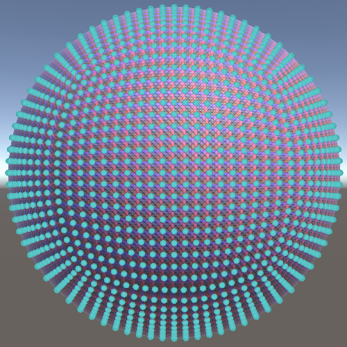
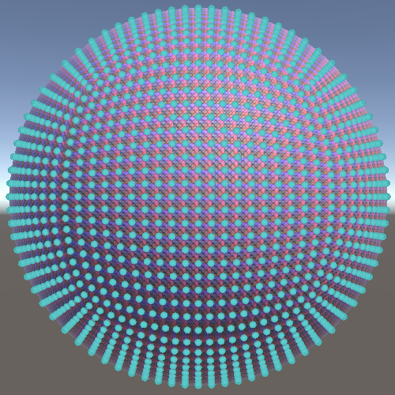

Cube Sphere
Going from Cube to Sphere
- Combine six grids to form a cube.
- Turn the cube into a sphere.
- Set normals and tangents per quad.
- Find an alternative mapping from cube to sphere.
This is the sixth tutorial in a series about procedural meshes. This time we first create a cube and then transform it into a sphere.
This tutorial is made with Unity 2020.3.23f1.

Cube
The UV sphere from the previous tutorial has a bad vertex distribution, bunching up vertices near the poles. Fortunately there are different ways to generate a sphere mesh. A common approach is to start with a cube and turn it into a sphere by pulling its vertices toward its center. The result is commonly known as a cube sphere.
UV Square Grid
Because we start with a cube we can partition the entire surface of the mesh into squares. So this time we will generate a mesh with separate quads instead of one with shared vertices. Start by duplicating SquareGrid, renaming it CubeSphere, and increasing its bounds size to two.
public struct CubeSphere : IMeshGenerator {
public Bounds Bounds => new Bounds(Vector3.zero, new Vector3(2f, 2f, 2f));
…
}
We'll again adjust the Execute method so it acts on U and V coordinates instead of Z and X, as the directions are no longer constant.
public void Execute<S> (int u, S streams) where S : struct, IMeshStreams {
int vi = 4 * Resolution * u, ti = 2 * Resolution * u;
for (int v = 0; v < Resolution; v++, vi += 4, ti += 2) {
var xCoordinates = float2€(v, v + 1f) / Resolution - 0.5f;
var zCoordinates = float2€(u, u + 1f) / Resolution - 0.5f;
…
}
}
Also add the cube sphere to ProceduralMesh.
static MeshJobScheduleDelegate[] jobs = {
…
MeshJob<PointyHexagonGrid, SingleStream>.ScheduleParallel,
MeshJob<CubeSphere, SingleStream>.ScheduleParallel,
MeshJob<UVSphere, SingleStream>.ScheduleParallel
};
public enum MeshType {
SquareGrid€, SharedSquareGrid€, SharedTriangleGrid€,
FlatHexagonGrid€, PointyHexagonGrid€, CubeSphere€, UVSphere€
};
First Side of the Cube
At this point we create a single square grid, which we can use to represent a single side of our cube. But because each of the six sides of a cube has its own position and orientation we'll have to make our grid flexible enough to support any position and orientation. To make this easy we'll introduce a private Side struct type inside CubeSphere containing three public vectors: the 3D position that matches the origin in UV space, along with 3D vectors that represent the U and V dimensions.
struct Side {
public float3 uvOrigin, uVector, vVector;
}
We'll define our cube such that it exactly contains the unit sphere. Thus its minimum corner is at XYZ −1 and its maximum corner is at XYZ 1, matching its bounding box. We begin with the back side of the cube, the one we see when looking down the Z axis. Its four corners are thus `[[-1],[-1],[-1]]`, `[[1],[-1],[-1]]`, `[[-1],[1],[-1]]`, and `[[1],[1],[-1]]`.
We can represent this side with a UV origin of −1 along a U vector pointing right and a V vector pointing up, both with length 2. Create a side variable for this at the start of Execute.
public void Execute<S> (int u, S streams) where S : struct, IMeshStreams {
var side = new Side {
uvOrigin = -1f,
uVector = 2f * right(),
vVector = 2f * up()
};
int vi = 4 * Resolution * u, ti = 2 * Resolution * u;
…
}
Determining the four vertices of each quad now becomes a bit more complicated. Once again we'll create columns of quads, so we have two U coordinates that are constant per column. We can find the corresponding 3D positions for the bottom of the column by adding the side's U vector to its UV origin, scaled appropriately. Store these in two variables before the loop.
float3 uA = side.uvOrigin + side.uVector * u / Resolution;
float3 uB = side.uvOrigin + side.uVector * (u + 1) / Resolution;
for (int v = 0; v < Resolution; v++, vi += 4, ti += 2) { … }
Then inside the loop we can find the four positions of the quad by adding the appropriately-scaled V vectors to these positions. Do this at the start of the loop, storing them in variables.
for (int v = 0; v < Resolution; v++, vi += 4, ti += 2) {
float3 pA = uA + side.vVector * v / Resolution;
float3 pB = uB + side.vVector * v / Resolution;
float3 pC = uA + side.vVector * (v + 1) / Resolution;
float3 pD = uB + side.vVector * (v + 1) / Resolution;
…
}
Now adjust the loop so these positions are used for its vertices.
//var xCoordinates = float2(v, v + 1f) / Resolution - 0.5f;//var zCoordinates = float2(u, u + 1f) / Resolution - 0.5f;var vertex = new Vertex(); vertex.normal.y = 1f; vertex.tangent.xw = float2€(1f, -1f);//vertex.position.x = xCoordinates.x;//vertex.position.z = zCoordinates.x;vertex.position = pA; streams.SetVertex(vi + 0, vertex);//vertex.position.x = xCoordinates.y;vertex.position = pB; vertex.texCoord0 = float2€(1f, 0f); streams.SetVertex(vi + 1, vertex);//vertex.position.x = xCoordinates.x;//vertex.position.z = zCoordinates.y;vertex.position = pC; vertex.texCoord0 = float2€(0f, 1f); streams.SetVertex(vi + 2, vertex);//vertex.position.x = xCoordinates.y;vertex.position = pD; vertex.texCoord0 = 1f; streams.SetVertex(vi + 3, vertex);
This will produces a grid for the first side of the cube, but it will have incorrect normal vectors. The normal vectors vary by side and so do the tangent vectors. So let's add fields for them to Side.
struct Side {
public float3 uvOrigin, uVector, vVector;
public float3 normal;
public float4 tangent;
}
In Execute, configure the normal and tangent for the back side appropriately.
var side = new Side {
uvOrigin = -1f,
uVector = 2f * right(),
vVector = 2f * up(),
normal = back(),
tangent = float4€(1f, 0f, 0f, -1f)
};
And use them inside the loop.
var vertex = new Vertex();//vertex.normal.y = 1f;//vertex.tangent.xw = float2€(1f, -1f);vertex.normal = side.normal; vertex.tangent = side.tangent;
Reducing Work
Because adjacent quads have overlapping vertices we can reuse the C and D positions of a quad for the A and B positions of the next quad. And because V starts at zero we don't need to calculate the V offsets for the fist A and B positions. This means we can eliminate some work by defining the A and B positions before the loop and making them equal to C and D at the end of each iteration.
float3 uA = side.uvOrigin + side.uVector * u / Resolution;
float3 uB = side.uvOrigin + side.uVector * (u + 1) / Resolution;
float3 pA = uA, pB = uB;
for (int v = 0; v < Resolution; v++, vi += 4, ti += 2) {
//float3 pA = uA + side.vVector * v / Resolution;
//float3 pB = uB + side.vVector * v / Resolution;
float3 pC = uA + side.vVector * (v + 1) / Resolution;
float3 pD = uB + side.vVector * (v + 1) / Resolution;
…
pA = pC;
pB = pD;
}
We can also avoid the addition of 1 to V each iteration by shifting the loop so it starts at 1 instead of zero.
for (int v = 1; v <= Resolution; v++, vi += 4, ti += 2) {
float3 pC = uA + side.vVector * v / Resolution;
float3 pD = uB + side.vVector * v / Resolution;
…
}
Six Sides
Because a cube has six sides we need to generate six grids, so we need six times as many vertices and triangle indices as before. Our job length also becomes six times as long.
public int VertexCount => 6 * 4 * Resolution * Resolution; public int IndexCount => 6 * 6 * Resolution * Resolution; public int JobLength => 6 * Resolution;
We can identify which side we're working on by assigning an identifier number to it, from 0 to 5. Add a field for this to Side.
struct Side {
public int id;
…
}
As Execute can now work on a column of any side, its index parameter no longer directly corresponds to the U index. So let's rename it to i. We can find the U index by dividing the job index by six, via an integer division.The side identifier then becomes equal to the remainder of that division, which we find by subtracting six times U from the job index.
public void Execute<S> (int i, S streams) where S : struct, IMeshStreams {
int u = i / 6;
var side = new Side {
id = i - 6 * u,
…
};
…
}
We also have to adjust the vertex and triangle index to take the side offset into account. We do this replacing U with the resolution times the side identifier plus U in both multications.
//int vi = 4 * Resolution * u, ti = 2 * Resolution * u;int vi = 4 * Resolution * (Resolution * side.id + u); int ti = 2 * Resolution * (Resolution * side.id + u);
Cube Layout
At this point we're generating all sides of the cube, but they'll all the same back side so they overlap. To correctly generate the cube we have to configure all six sides appropriately. There are various ways that we could define the sides. A common and straightforward approach is to start by wrapping around the Y axis, forming the back, right, forward, and left sides. Then finish by adding the bottom and top sides. This is a typical box unwrap, with varying ways to orient the bottom and top sides.

A downside of this approach is that is lacks symmetry, because the orientation of the bottom and top sides can never match those of the other sides. A UV sphere doesn't have this problem because its layout is anchored on the poles of the sphere. This is easiest to see at resolution 1, which matches an octahedron. The octahedron can be unwrapped by peeling it open at the north pole, leaving its columns connected only at the south pole.

We can use a similar polar layout for our cube sphere. This requires us to designate two of its corners as its poles. We'll use its minimum and maximum corners. To make this intuitive let's orient our cube so these corners are indeed at the bottom and top.
As the required rotation isn't trivial let's first do this with a default cube game object. The first step is to rotate 45° around the Z axis so the sides touching the minimum and maximum corners are at the bottom and top.


The second step is to rotate around the X axis by −35.26° so that the correct corners are at the bottom and top.


Now it becomes clear that we can also peel open the cube starting at the north pole, leaving it connected only at the south pole. The result is a symmetrical layout consisting of three slanted columns that each contain two sides of the cube.

Apply the same rotation to our Procedural Mesh game object.
Folding the Sides
To correctly fold the sides to get our cube we have to give each its own configuration. To do this we'll introduce a static GetSide method that returns the appropriate Side value for a given identifier. Initially it returns the single side that we already have. We also copy the identifier parameters to the side's field.
static Side GetSide (int id) => new Side {
id = id,
uvOrigin = -1f,
uVector = 2f * right(),
vVector = 2f * up(),
normal = back(),
tangent = float4€(1f, 0f, 0f, -1f)
};
Invoke this method in Execute to get the side.
int u = i / 6; Side side = GetSide(i - 6 * u);//var side = new Side { … };
To select the appropriate side we'll change GetSide so it uses a switch expression, initially only supporting the first face.
static Side GetSide (int id) => id switch {
0 => new Side {
id = id,
uvOrigin = -1f,
uVector = 2f * right(),
vVector = 2f * up(),
normal = back(),
tangent = float4€(1f, 0f, 0f, -1f)
}
};
At this point the compiler will issue a warning that the switch block does not handle all possible input values, because we only have an option for zero. To handle all possible integer values we can use the special underscore _ option, which represents the default case when none of the other options match. Duplicate the zero option and use that for the default.
0 => new Side { … },
_ => new Side { … }
Let's change the default option to represent the second side of the cube. Following our polar layout, this is the right side of the cube. Its UV origin is equal to the origin of the back side with the back side's U vector added to it, so `[[1],[-1],[-1]]`. Its U vector goes forward instead of right and its V vector doesn't change. Adjust its normal and tangent vectors to match.
_ => new Side {
id = id,
uvOrigin = float3€(1f, -1f, -1f),
uVector = 2f * forward(),
vVector = 2f * up(),
normal = right(),
tangent = float4€(0f, 0f, 1f, -1f)
}

Duplicate this option and make it the option for 1. Then adjust the default to represent the third side. This is the bottom, again starting at the minimum corner. Its U vector matches side 1 but its V vector points right.
0 => new Side { … },
1 => new Side { … },
_ => new Side {
id = id,
uvOrigin = -1f,
uVector = 2f * forward(),
vVector = 2f * right(),
normal = down(),
tangent = float4€(0f, 0f, 1f, -1f)
}

Repeat this process, now for the forward side.
2 => new Side { … },
_ => new Side {
id = id,
uvOrigin = float3€(-1f, -1f, 1f),
uVector = 2f * up(),
vVector = 2f * right(),
normal = forward(),
tangent = float4€(0f, 1f, 0f, -1f)
}

After that comes the third side column, starting with the left side.
3 => new Side { … },
_ => new Side {
id = id,
uvOrigin = -1f,
uVector = 2f * up(),
vVector = 2f * forward(),
normal = left(),
tangent = float4€(0f, 1f, 0f, -1f)
}

And finally the top side.
4 => new Side { … },
_ => new Side {
id = id,
uvOrigin = float3€(-1f, 1f, -1f),
uVector = 2f * right(),
vVector = 2f * forward(),
normal = up(),
tangent = float4€(1f, 0f, 0f, -1f)
}


Sphere
Now that we have a complete cube with grids for sides we can turn it into a sphere.
Normalization
To convert the cube we have to adjust its vertex positions, for which we'll add a static CubeToSphere method that converts a given point. The straightforward way to do this is by normalizing the vector that represents the point. This pulls all vertices toward the origin, forming a unit sphere.
static float3 CubeToSphere (float3 p) => normalize(p);
Use this method to convert all four positions in Execute.
float3 pA = CubeToSphere(uA), pB = CubeToSphere(uB);
for (int v = 1; v <= Resolution; v++, vi += 4, ti += 2) {
float3 pC = CubeToSphere(uA + side.vVector * v / Resolution);
float3 pD = CubeToSphere(uB + side.vVector * v / Resolution);
…
}
This creates a sphere, but with the normal vectors or a cube. We can fix this by also using the positions as normal vectors.
var vertex = new Vertex();//vertex.normal = side.normal;vertex.tangent = side.tangent; vertex.position = pA; vertex.normal = pA; streams.SetVertex(vi + 0, vertex); vertex.position = pB; vertex.normal = pB; vertex.texCoord0 = float2(1f, 0f); streams.SetVertex(vi + 1, vertex); vertex.position = pC; vertex.normal = pC; vertex.texCoord0 = float2(0f, 1f); streams.SetVertex(vi + 2, vertex); vertex.position = pD; vertex.normal = pD;
Tangents
We also have to adjust the tangent vectors. The most straightforward way to do this is by aligning them with the U sides of the quad. Thus before the loop the initial tangent XYZ components are equal to the vector from A to B—so B minus A—normalized. Then inside the loop we have to adjust the tangent each time, using C and D instead.
var vertex = new Vertex();
vertex.tangent = float4€(normalize(pB - pA), -1f);
for (int v = 1; v <= Resolution; v++, vi += 4, ti += 2) {
float3 pC = CubeToSphere(uA + side.vVector * v / Resolution);
float3 pD = CubeToSphere(uB + side.vVector * v / Resolution);
//var vertex = new Vertex();
//vertex.tangent = side.tangent;
vertex.position = pA;
vertex.normal = pA;
vertex.texCoord0 = 0f;
streams.SetVertex(vi + 0, vertex);
…
vertex.position = pC;
vertex.normal = pC;
vertex.tangent.xyz = normalize(pD - pC);
vertex.texCoord0 = float2€(0f, 1f);
streams.SetVertex(vi + 2, vertex);
…
}

Normals per Quad
Because we set the tangents to align with the quad edges they aren't continuous across the surface of the sphere. There is a sudden change in tangent direction between adjacent quads, which can lead to visible seams in the normal map. This is fine, because each quad represents a single cell of our grid, which are textured independently. We can do this same with the normal vectors, making them match the quads instead of a perfect sphere.
The A normal is equal to the cross product of the vectors from A to C and from A to B, normalized. We can use the tangent vector for the latter, as length doesn't matter. The B normal is the same, but with the vector from B to D and the tangent instead.
vertex.position = pA; vertex.normal = normalize(cross(pC - pA, vertex.tangent.xyz)); vertex.texCoord0 = 0f; streams.SetVertex(vi + 0, vertex); vertex.position = pB; vertex.normal = normalize(cross(pD - pB, vertex.tangent.xyz)); vertex.texCoord0 = float2(1f, 0f); streams.SetVertex(vi + 1, vertex);
The C and D normals are found with the exact same calculations, after adjusting the tangent.
vertex.position = pC;//vertex.normal = pC;vertex.tangent.xyz = normalize(pD - pC); vertex.normal = normalize(cross(pC - pA, vertex.tangent.xyz)); vertex.texCoord0 = float2€(0f, 1f); streams.SetVertex(vi + 2, vertex); vertex.position = pD; vertex.normal = normalize(cross(pD - pB, vertex.tangent.xyz)); vertex.texCoord0 = 1f; streams.SetVertex(vi + 3, vertex);

The result is that individual cells of our grids now appear flatter, giving the sphere a somewhat faceted look. This is more obvious for low resolution spheres, especially resolution 1 which becomes a regular cube.
Cleaning Up the Sides
As normals and tangents are generated per quad we no longer need to define them in Side.
struct Side {
public int id;
public float3 uvOrigin, uVector, vVector;
//public float3 normal;
//public float4 tangent;
}
Remove the code the set them from GetSide. I only show the changes for the first side.
0 => new Side {
id = id,
uvOrigin = -1f,
uVector = 2f * right(),
vVector = 2f * up() //,
//normal = back(),
//tangent = float4(1f, 0f, 0f, -1f)
},
Investigating the Mapping
When converting from cube to sphere not all vertices get displaced the same distance. The vertices exactly in the middle of each face do not move at all, while the vertices exactly on the corners of the cube are moved the most. Because normalization draws points towards the center, the more they move the more they bunch up. Thus the final vertex distribution is not uniform. As a result the grid cells near the center of cube sides are mostly square, while the cells that are near the corners of the cube are heavily distorted. There is no way to eliminate this distortion, because at the corner of cube sides only three cells touch a grid intersection, while everywhere else it's always four cells.
To see this distortion clearly, show the vertices of the cube sphere set to a fairly high resolution, like 20.


Although the grid distortion cannot be eliminated, it might be possible to convert from cube to sphere via a different mapping that exhibits less distortion. To investigate this let's first simplify the problem be reducing it to only two dimensions: mapping a square to a circle.
Going from a square with edge length 2 to a unit circle shows a slice of the problem that we have in three dimensions: due to normalization points that start near the corners end up closer together on the circle.

The goal is to find a mapping that distributes the points more evenly on the circle. To determine whether such a mapping exists let's first formalize the normalization as a mapping function: `c=hat s=s/||s||` where `c` is the circle point and `s=[[x],[y]]` is the square point.
Normalization is done by dividing by the vector's length. As we're working in 2D `||s||=sqrt(x^2+y^2)` with `x` and `y` the components of `s`. As the square has edge length 2 and is centered on the origin these components have the domain −1–1, with at least one of the two always being either −1 or 1.
Let's formally prove that all points `c` indeed lie on the unit circle. We do this by proving that `||c||=1`, or by proving that `||c||^2=1`, which eliminates a square root from the equation. That reduces the problem to proving that `a^2+b^2=1` with `a` and `b` the components of a 2D vector.
We know the components of `c`, because `c=([[x],[y]])/||s||=[[x/||s||],[y/||s||]]`.
Thus `a=x/||s||` and `b=y/||s||`.
Hence `||c||^2=a^2+b^2=x^2/||s||^2+y^2/||s||^2=(x^2+y^2)/||s||^2=(x^2+y^2)/(x^2+y^2)=1`.
Alternative Mapping
The point of the proof is to show that there is a formula that yields 1 for all points on the square. This formula corresponds to a mapping from square to circle. If we can find a similar but different formula that does the same thing then there must also exist a different mapping from square to circle.
Let's come up with such a function, keeping it as simple as possible. We know that at least one of the coordinates is always either −1 or 1. So if we square both coordinates we get a least at single 1. We can then turn them into potential zeros, by using `1-x^2` and `1-y^2`. If we multiply those together we are guaranteed to always get zero. So if we subtract that from 1 the result will always be 1. This gives us a new formula: `||c||^2=1-(1-x^2)(1-y^2)`.
This formula can be simplified: `||c||^2=1-(1-x^2)(1-y^2)=x^2+y^2-x^2y^2`.
Now we have to split our formula so it applies to two components of a vector, because `1=a^2+b^2=x^2+y^2-x^2y^2`. It's obvious that `x^2` is part of `a^2` and that `y^2` is part of `b^2`, but that leaves `-x^2y^2`. We have to distribute this part as well, and to produce a symmetrical result we'll have to evenly split it. Thus `[[a^2],[b^2]]=[[x^2-(x^2y^2)/2],[y^2-(x^2y^2)/2]]`.
This suggests a new mapping: `c=[[sqrt(a^2)],[sqrt(b^2)]]=[[sqrt(x^2-(x^2y^2)/2)],[sqrt(y^2-(x^2y^2)/2)]]`.
To preserve the original signs of the components we have to extract them from the square roots, so we end up with the mapping `c=[[a],[b]]=[[xsqrt(1-y^2/2)],[ysqrt(1-x^2/2)]]`.
Applying this alternative mapping does yield better results. The points are now pulled toward the middle of the square edges instead of the corners. So they now bunch up there, but not as much as they did near the corners.

We can do the same thing for the mapping from cube to sphere, using the same reasoning but now with an extra dimension. This leads to the equation `1=a^2+b^2+c^2=1-(1-x^2)(1-y^2)(1-z^2)`.
We can again simplify, in this case to `a^2+b^2+c^2=x^2+y^2+z^2-x^2y^2-x^2z^2-y^2z^2+x^2y^2z^2`.
We again split the formula as before, but now we have to assign portions appropriately and have to equally divide the `x^2y^2z^2` between all three components: `[[a^2],[b^2],[c^2]]=[[x^2-(x^2y^2+x^2z^2)/2+(x^2y^2z^2)/3],[y^2-(x^2y^2+y^2z^2)/2+(x^2y^2z^2)/3],[z^2-(x^2z^2+y^2z^2)/2+(x^2y^2z^2)/3]]` which leads to the mapping `[[a],[b],[c]]=[[xsqrt(1-(y^2+z^2)/2+(y^2z^2)/3)],[ysqrt(1-(x^2+z^2)/2+(x^2z^2)/3)],[zsqrt(1-(x^2+y^2)/2+(x^2y^2)/3)]]`.
Use this for the mapping instead of normalization in CubeToSphere. We can efficiently calculate it with vector math as `psqrt(1-(p_(yx x)^2+p_(zzy)^2)/2+(p_(yx x)^2p_(zzy)^2)/3)`, with `p` being the parameter.
static float3 CubeToSphere (float3 p) => p * sqrt( 1f - ((p * p).yxx + (p * p).zzy) / 2f + (p * p).yxx * (p * p).zzy / 3f );
 

Just like for the circle, the alternative mapping produce a more uniform vertex layout than simple normalization.
The next tutorial is Seamless Cube Sphere.